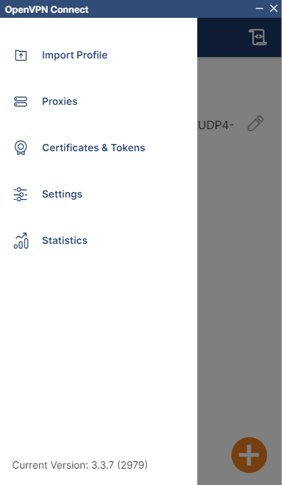
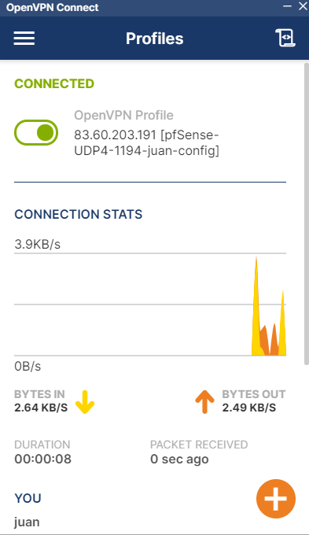

USO DE LA VPN DEL DEPARTAMENTO
Conexión a la VPN del IES Celia Viñas ¶
VPN son las siglas de Virtual Private Network, o red privada virtual
Una conexión VPN lo que te permite es crear una red local sin necesidad de que sus integrantes estén físicamente conectados entre sí, sino a través de Internet. Es el componente "virtual" del que hablábamos antes. Obtienen las ventajas de la red local (y alguna extra), con una mayor flexibilidad, pues la conexión es a través de Internet y puede por ejemplo ser de una punta del mundo a la otra.
Para conectarnos a la VPN del IES Celia Viñas seguiremos estos pasos.
1. Descarga el cliente de OpenVPN para tu sistema operativo favorito.

2. Utiliza el archivo de configuración .ovpn proporcionado para conectar con el servidor de OpenVPN.
3. Crea una nueva conexión y accede con tu usuario y contraseña proporcionados por tu profesor/a
4. Una vez que te hayas conectado a la VPN tendrás acceso a las máquinas de OpenStack.

La URL del dashboard de OpenStack es: https://172.16.0.11/
5. Para cambiar la contraseña de tu usuario de la VPN accede a la URL: http://172.16.0.1/
Ya tenemos configurado el DNS dinámico en el router del departamento.
El nombre de dominio para conectar con la VPN es: vpn-iescelia.ddns.net
Para esta parte, el profesor verificará que el alumno puede conectarse de forma remota. Desde vuestra casa, realizar la conexión e incluir en la práctica las capturas necesarias, donde se pueda ver que es vuestro equipo en vuestra red de casa, y la conexión a vuestra máquina en el instituto